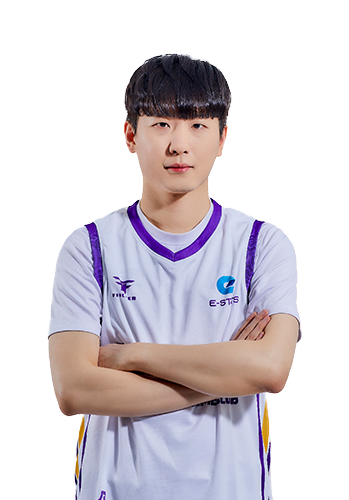
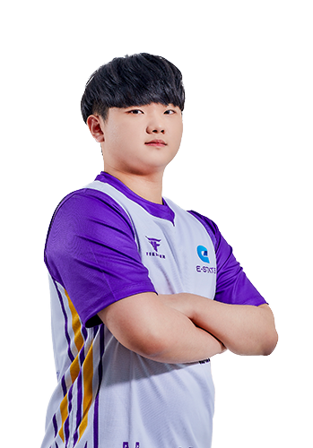
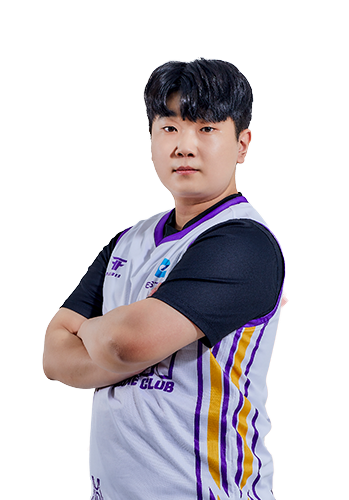
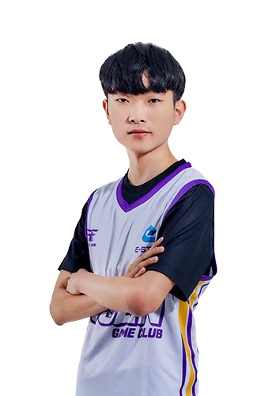
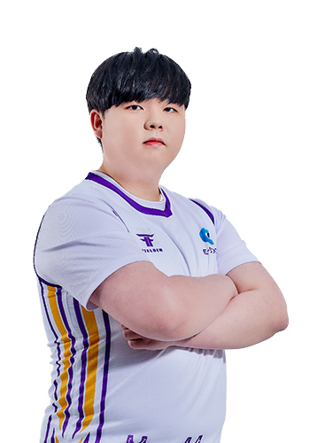

E-STATS
E-STATS의 멤버로는 전대웅, 노준현, 임재원, 김지민, 유관영이 있다.
전대웅 : SPEED ACE / 노준현 : MIDDLE / 임재원 : SWEEPER / 김지민 : HYBRID / 유관영 : ITEM ACE
전대웅 : SPEED ACE

전대웅은 1994년 9월 29일생으로 인천광역시에서 태어났다.
별명으로는 주행은 전대웅, 웅트등이 있다
우승 : 팀전 2회
노준현 : MIDDLE

노준현은 1999년 12월 13일생으로 경상북도 상주시에서 태어났다.
닉네임은 개월드이다.
임재원 : SWEEPER

임재원은 2000년 8월 22일생으로 제주도 서귀포시에서 태어났다.
2021년 1월 7일부터 진지하게 다이어트에 들어갔다. 과연 성공할 수 있을까
별명은 잰, 괴도등이 있다.
김지민 : HYBRID

김지민은 2002년 4월 18일생이다. 별명은 다람지민이다.
유관영 : ITEM ACE

유관영은 1997년 12월 9일생으로 충청남도 아산시에서 태어났다.
별명으로는 지우펀, 삼삼이 있다.